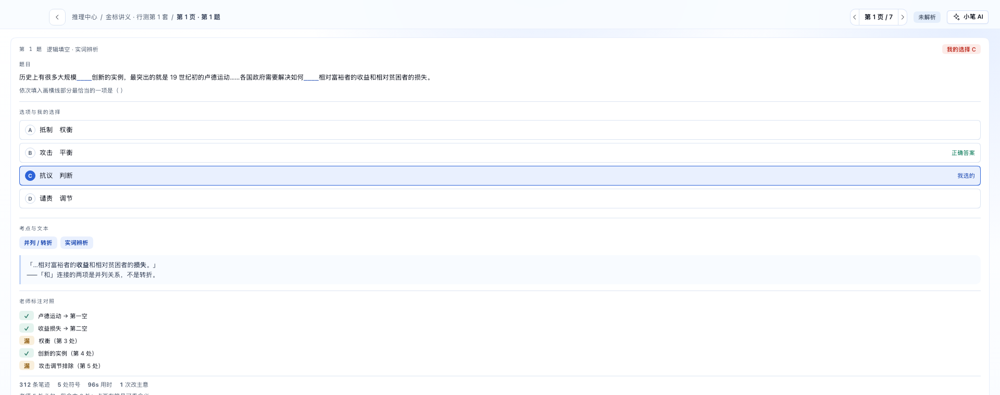
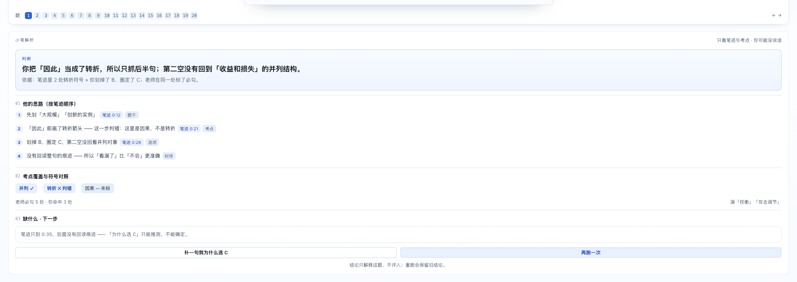

不是把“答案 + 解析”搬到屏幕上。学员用智慧笔写下的过程、老师标出的必勾、题目考点和解析，会一起进入一次推理运行；输出是「这一题你哪一步想错了、依据是什么、还缺什么」，再通过小笔对话继续追问，形成自己的画像。
白天用笔学习 → 平台拿到足够上下文 → 推理按需运行 → 学员愿意聊时，Agent 再整理；不是后台偷偷生成结论。

题干/选项/答案/解析、考点文本、学生笔迹与符号、学生作答、时长、改主意次数、老师必勾/准入标注、过去画像；不是只有一段题干。
未运行时不显示「— / 0 / 骨架屏」，只显示「这题还没有解析」和「问问小笔」。这保证结论一定来自一次真实运行，而不是页面占位。

判断：你把「因此」当成了转折，所以只抓后半句；第二空没有回到「收益和损失」的并列结构。
依据：笔迹里 2 处转折符号 + 你划掉了 B、圈定了 C；老师在同一处标了必勾。
他的思路：1 先划「大规模」「创新的实例」→ 2 在「因此」前画转折箭头（这一步判错：这里是因果，不是转折）→ 3 划掉 B、圈定 C，第二空没回看并列对象 → 4 没有回读整句的痕迹，所以「看漏了」比「不会」更准确。
对照：老师必勾 5 处，命中 3 处，漏「权衡」「攻击调节」；并列 ✓、转折 ✕ 判错、因果 — 未标。
下一步：补一句「我为什么选 C」或再跑一次；重跑保留旧结论。
| 能力 | 现在怎么用 | 和哪个模块咬合 |
|---|---|---|
| 推理 run | 学员点「问问小笔」才运行；输入已含符号文本对应、题目、考点、解析、作答、时长、老师必勾、画像 | 标注中心提供老师标准；推理中心展示判断；资料室沉淀讲评；课堂消费 |
| 小笔对话 | 带着当前页/题继续追问；补一句「我为什么选 C」后可以再跑一次，把原话纳入上下文 | 全局小笔 AI、推理面板、笔迹中心 |
| 用户画像 | 从多题/多会话里整理「常错关系、先看哪里、什么时候回读」，不是一次结论 | 推理报告、记忆面板、老师班级聚合 |
| 老师 Agent | 看班级/套题/学生/差异/标注数据，生成讲评包草稿，老师审核后发布 | 班级汇总、套题学生、资料室、课堂 |
| 离线 dreaming | 会话结束后整理记忆/画像，输出独立结果，默认不直接覆盖 | 小笔记忆、后续推理上下文 |
我的研究重点不是“多接一个模型”，而是把更丰富的上下文、符号与文本对应、过去画像、蒸馏的考公老师 skill 拼成一条能解释证据的推理链；fable 负责更抽象的部分，ds 负责复杂路径分析。
| 步骤 | 准备 | 演示时看什么 |
|---|---|---|
| 1. 老师标准 | 提前选好当前金标讲义；老师端标注好一页的必勾/可选 | 老师标准如何进入推理，而不是模型猜 |
| 2. 两支学生笔 | 选 2 个学生；符号/接地部分我手动补齐（符号识别实验仍不足） | 两个学生同一道题的不同思路，报告不一样 |
| 3. 运行前 | 展示 12a：题目、作答、老师必勾、笔迹都在，但还没有结论 | 「没有跑就没有结论」 |
| 4. 运行后 | 点「问问小笔」，展示 12b 的判断/思路/对照/缺什么 | 个性化报告 vs 普通答案解析 |
| 5. 继续交互 | 补一句「我为什么选 C」→ 再跑一次；打开小笔问「这题最慢在哪」 | 对话捕捉学生输入，报告升级 |
| 6. 老师侧 | 切老师端：班级汇总 → 套题学生 → 差异 → 讲评包草稿审核 | 同一条证据链怎么服务老师 |
符号识别/接地还没到全自动：19 号演示我会提前手工完成符号与接地，避免把实验不足说成已解决；page_id 全量、真实 SSO、classroom-gateway、生产告警仍未接。推理结果本身是真实运行产生的，不用假数据补画面。
先把可演、半落地、未接分开；演示只讲前两列，不把设计当成已经上线。
| 能力 | 现在 | 演示怎么处理 |
|---|---|---|
| 推理 run（12a→12b） | 可演：输入题/笔迹/作答/老师必勾，输出判断/依据/缺什么；本机已能跑出截图 | 作为主效果；每次演示前先预跑一次，保留截图兜底 |
| 小笔对话 / AgentPanel | 入口与面板已有；完整模型/跨仓 run 契约仍需联调 | 先演示「带着当前题继续问」的交互；不承诺无证据的秒回 |
| 用户画像 / 记忆 / dreaming | 代码已有（P0–P22 记忆、dreaming、forget/correct），默认开关未开；画像尚未接进 12b 主链路 | 演示「记忆面板/画像」只作为下一阶段，不在主流程里假装已生效 |
| 插件内核 | 内核可运行；目前 context/memory 已迁插件，工具/教学/dreaming 仍编译期注册 | 讲「可替换」的架构，不把「所有插件已迁完」说成完成 |
| 多智能体 / A2UI / HITL 全链路 | 设计态；AgentAsTool/A2UI/审批是目标 | 用图 2 讲方向；现场只演单 Agent + 老师审核的局部 |
| 符号识别 / 接地 / page_id / SSO | 不足或部分；本次演示手动补符号与接地，page_id/班级仍为本地数据 | 提前说明手工部分，避免把实验不足说成自动能力 |
| 优先级 | 做什么 | 验收 |
|---|---|---|
| P0 | 把 12b 推理 run 稳定成可重复演示：完整 context、required_mark、evidence、missing、取消/SSE、旧结论保留 | 同一题同一输入重复跑结果稳定；每条结论有 ref；无证据写 missing |
| P0 | 学生对话捕获：把「我为什么选 C」写入下一次 run；AgentPanel 展示对话/记忆/证据 | 补一句后重跑，报告/画像有变化且可回看 |
| P1 | 老师 HITL：讲评包草稿 → 采纳/编辑/删除 → 发布；课堂提示 → 采纳 → 投屏 | 未审核内容不发布/不投屏；班级 scope 403 正确 |
| P1 | 插件化继续：tools/teaching/dreaming 迁插件；A2UI/approval 卡 | 换模型/教学 skill 不改内核；未知 UI 回退文本 |
| P2 | 多智能体 AgentAsTool、adventure 长期任务、wiki/画像表示层 | 子 Agent 不共享全历史；教师可审阅 |
老师金标一套/一页；学生 A/B 两支笔；手动补符号与接地；确认 12a 有 312 条笔迹/5 处符号/作答/时长；预跑 12b 并保留截图。
网络/模型失败时直接切预跑截图和录屏；不现场改数据、不把空态说成成功；每个学生只展示与本人相关的报告。
先讲学员问题（普通解析不够）→ 再放 12a→12b → 再补一句继续问 → 最后切老师端看同一批证据；架构图放最后，不先讲架子。
不承诺全自动符号识别、不承诺在线 dreaming、不承诺教师自动发布、不展示他人数据；实验不足的部分明确说手工。
学员不是“多了一个 AI 聊天入口”，而是：他每天用笔学习后，平台能把他自己的过程还给他——哪一步错了、为什么错、下一次先看什么；愿意聊时，Agent 再用他的原话和画像把这份报告继续升级。老师拿到的则是同一批证据的班级视图和讲评草稿。
这也是我前面三轮工作的落点：第一轮把界面跑通，第二轮把流程和品牌修正，第三轮补系统/Agent 架构；这一页把最核心的「推理运行效果」单独拉出来，先看效果，再看架子。